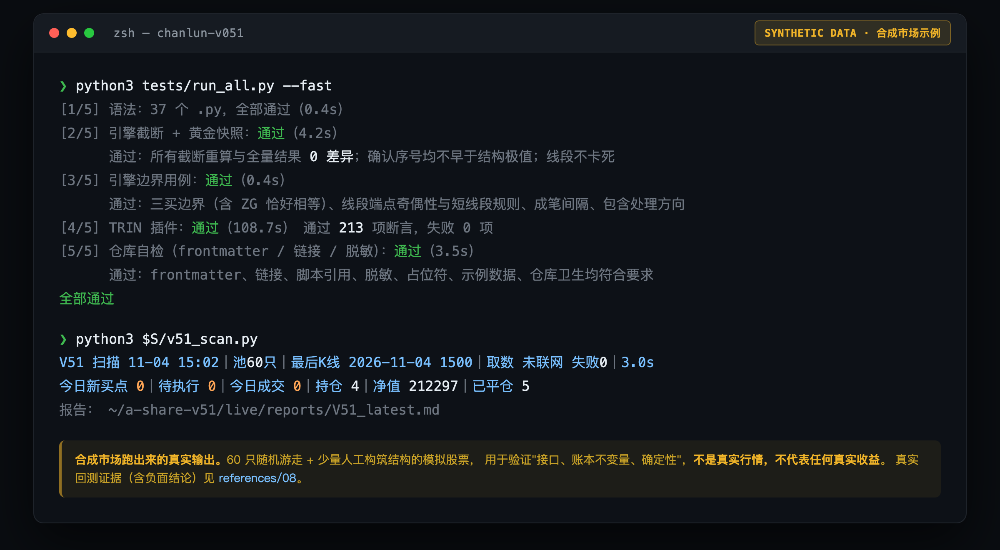
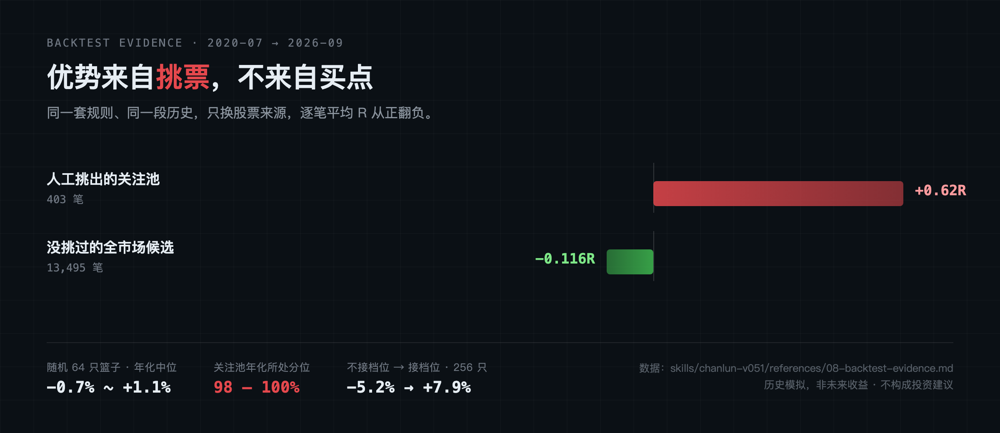

把缠论买卖点机械化，跑在 A 股关注池上 ——
可复现、无前视、纸面记账、证据公开。
30 分钟线段引擎 ＋ 完整交易系统 ＋ 实时回测工具箱，也是一个可被 AI 助手加载的 Agent Skill。

优势来自挑票，不来自买点。 同一套规则、同一段历史，只换股票来源，逐笔平均 R 从正翻负。 这个仓库的价值在于规则可复现、没有前视、风控清晰、验证方法诚实 —— 不在于它能赚钱。

不需要任何行情数据，clone 下来就能跑。买点算得对不对先不谈，先确认它至少没前视、没算错。
$ git clone https://github.com/lbh-banboo/chanlun-v051.git $ cd chanlun-v051 $ pip install pandas numpy $ python3 tests/run_all.py --fast [1/5] 语法：37 个 .py，全部通过 [2/5] 引擎截断 + 黄金快照：通过 截断重算与全量结果 0 差异 [3/5] 引擎边界用例：通过 [4/5] TRIN 插件：通过 213 项断言 [5/5] 仓库自检：通过 全部通过